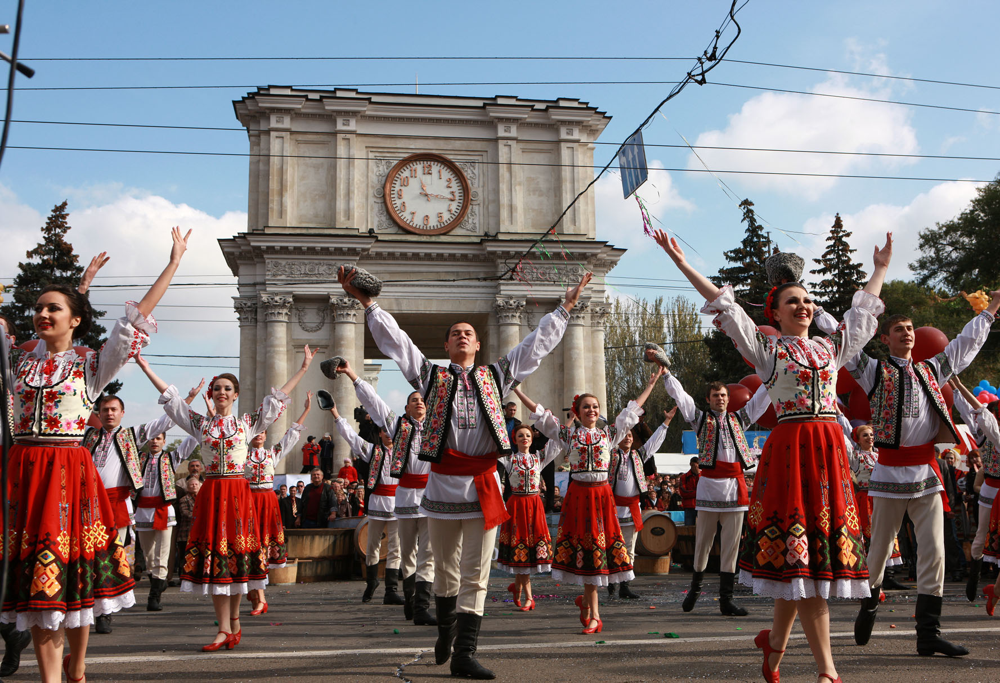

Cultura
Cultura Republicii Moldova de-a lungul istoriei, covorul popular moldovenesc a căpătat semnificația simbolului creației artizanale moldovenești ce a evoluat de-a lungul anilor, însă a păstrat autenticitatea tradițiilor. Perioada în care s-au conturat motivele predominante ale covorului moldovenesc se consideră a fi secolul al XVIII-lea – începutul secolului al XIX-lea. Anume în această perioadă s-au determinat ornamentele caracteristice tradiționalului moldovenesc, compoziția reflectată și ornamentele utilizate în ansamblu.
Chiar dacă pentru o perioadă de timp tradiția țesutului a înregistrat o stagnare, urmează perioade de relansare ce a fost posibilă datorită moștenirii cunoștințelor și dragostei față de popor și istorie. Dansurile populare moldovenești au devenit cunoscute multe despre poporul moldovenesc, pot cu siguranță să urmărească dansurile populare deoarece astfel vor putea avea o viziune asupra emoțiilor, culturii și în mai multe categorii, iar una dintre ele este cea a dansului în conformitate cu evenimentele ce au loc în viața unui moldovean. Aici putem vorbi despre dansuri legate de diverse fenomene ale naturii, dansuri ce marchează evenimente în viață, dansuri ce comunică despre vitejia și curajul poporului în momente în care se demonstrează demnitatea acestuia.
De-a lungul istoriei, covorul popular moldovenesc a căpătat semnificația simbolului creației artizanale moldovenești ce a evoluat de-a lungul anilor, însă a păstrat autenticitatea tradițiilor. Perioada în care s-au conturat motivele predominante ale covorului moldovenesc se consideră a fi secolul dansurile populare deoarece astfel vor putea avea o viziune asupra emoțiilor, culturii și valorilor oamenilor din Moldova. Dansurile tradiționale moldovenești reprezintă evenimentele ce au loc în viața unui moldovean. Aici putem vorbi despre dansuri legate de diverse fenomene ale naturii, dansuri ce marchează evenimente în viață, dansuri ce comunică despre vitejia și curajul poporului în momente în care se demonstrează demnitatea acestuia.
Semnificația simbolului creației artizanale moldovenești ce a evoluat de-a lungul anilor, însă a păstrat autenticitatea tradițiilor. Perioada în care s-au conturat motivele predominante ale covorului moldovenesc se consideră a fi secolul remarcată din perioada Cucuteni-Tripolie. Stemele voievozilor reprezintă elementele care puteau fi remarcate pe unele clădiri istorice, biserici și cetăți. Un rol important în reprezentarea sculpturii este sculptura tradițională – în lemn și piatră. Aceste elemente elaborate erau utilizate pentru decorarea caselor, gardurilor, coloanelor și elementelor de decor de ansamblu. Putem deosebi mai multe tipuri de sculpturi, acestea fiind influențate de evenimente și istoric – sculpturi cu tematică religioasă, funerară, populară și sculptura profesională.
De-a lungul istoriei, covorul popular moldovenesc a căpătat semnificația simbolului creației artizanale moldovenești ce a evoluat de-a lungul anilor, însă a păstrat autenticitatea tradițiilor. Perioada în care s-au conturat motivele predominante ale covorului moldovenesc se consideră a fi secolul al XVIII-lea – începutul secolului al XIX-lea. Anume în această perioadă s-au determinat ornamentele caracteristice tradiționalului moldovenesc, compoziția reflectată și ornamentele utilizate în ansamblu. Chiar dacă pentru o perioadă de timp tradiția țesutului a înregistrat o stagnare, urmează perioade de tradițională – în lemn și piatră. Aceste elemente elaborate erau utilizate pentru decorarea caselor, gardurilor, coloanelor și elementelor de decor de ansamblu. Putem deosebi mai multe tipuri de sculpturi, acestea fiind influențate de evenimente și istoric – sculpturi cu tematică religioasă, funerară, populară și sculptura profesională.
De-a lungul istoriei, covorul popular moldovenesc a căpătat semnificația simbolului creației artizanale moldovenești ce a evoluat de-a lungul anilor, însă a păstrat autenticitatea tradițiilor. Perioada în care s-au conturat motivele predominante ale covorului moldovenesc se consideră a fi secolul al XVIII-lea – începutul secolului al XIX-lea. Anume în această perioadă s-au determinat ornamentele caracteristice tradiționalului moldovenesc, compoziția reflectată și ornamentele utilizate în ansamblu. Chiar dacă pentru o perioadă de timp tradiția țesutului a înregistrat o stagnare, urmează perioade de relansare ce a fost posibilă datorită moștenirii cunoștințelor și dragostei față de popor și istorie.
Noutati
Anume în această perioadă s-au determinat ornamentele caracteristice tradiționalului
Anume în această perioadă s-au determinat ornamentele caracteristice tradiționalului
Anume în această perioadă s-au determinat ornamentele caracteristice tradiționalului